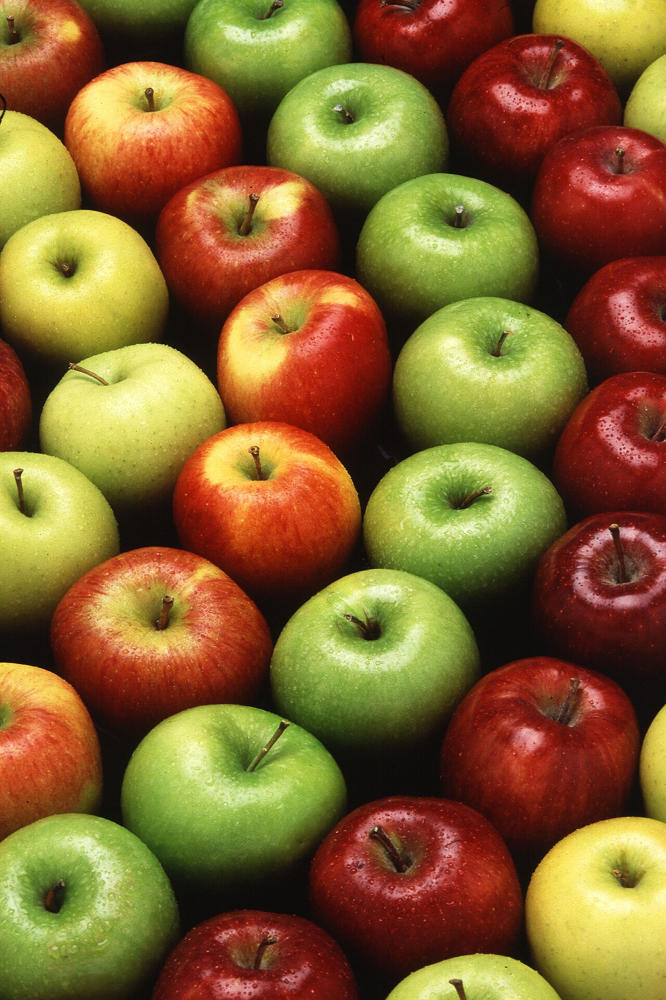

Assorted Fresh Apples
Multiple whole apples fill the frame in a tight arrangement, with glossy red, bright green, and pale yellow skins. The round fruit has visible stems, shallow top dimples, small speckles, and water droplets on the surfaces against a dark background.
../ImageDataset/Apples.jpg